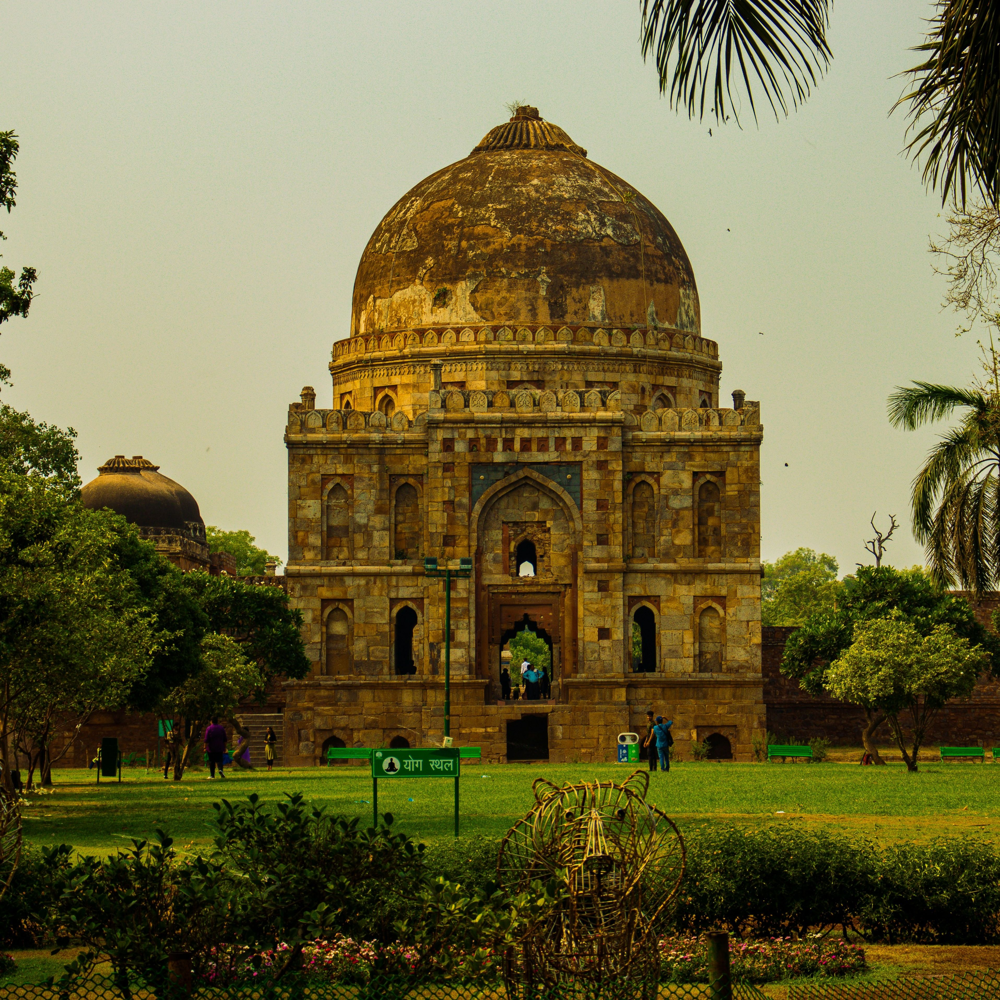

Top three activities to do at Delhi

Explore historical landmarks
Visit the majestic Red Fort, Humayun's Tomb, or Qutub Minar to experience Delhi's rich Mughal and colonial past.
Indulge in street food at Chandni Chowk
Savor Delhi's famous chaats, parathas, and jalebis in the bustling lanes of one of the oldest markets in India.

Relax at Lodhi Garden or India Gate lawns
Unwind with a walk, picnic, or photo session amid greenery and iconic monuments in the heart of the city.